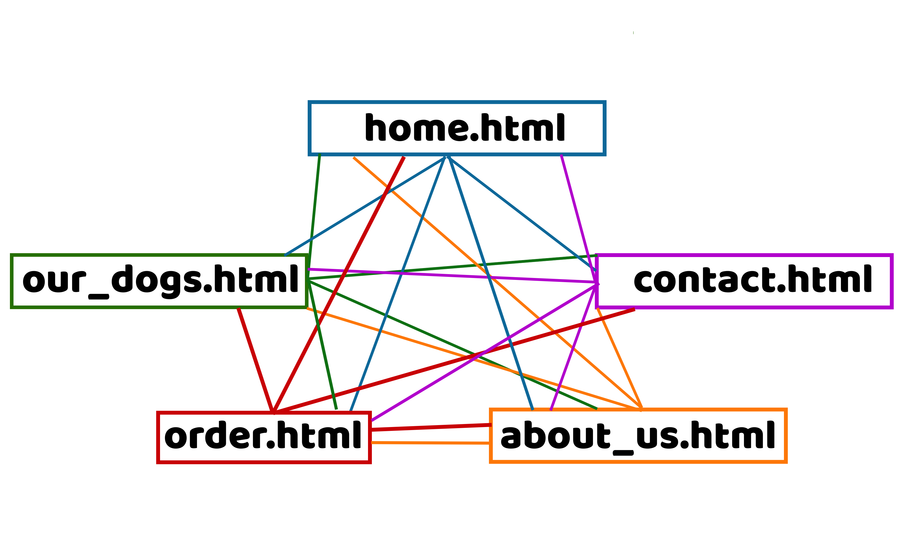

Text: Noah, Sander, Marcus, Morten, Sondre and Ove
Publisert:
Administrative Details
Client Name: Rentadog AS
Contact Person: Lars Kjøpmann
Website Name: Rent A Dog
Purpose, goals and audience
The purpose of "Rent a dog" is to give people who love dogs the opportunity to rent a dog for a certain period of time.
The way we will do it is that the website must have an overview of the dogs that can be rented and a clear overview of which dogs are available or rented out.
The overview should have lots of cute pictures and information about each individual dog to attract as many customers as possible.
The aim of "Rent a dog" is to have a turnover of 1 banana in the first quarter of 2023, while at the same time aim to become the largest provider of rentable dogs in Norway.
The audience of “rentadog” is everyone with a love for dogs. Does your kid want a dog? Rentadog is the perfect answer. Your kid will get the dog experience as many times as he likes, while you don’t have to care about the housing of the dog.
Are you in need of a date idea for a tinder match? With rentadog you can have a cute puppy at your disposal for a couple of hours. With a Labrador by your side, you will definitely get the girl of your dreams!
The answer is that rentadog is for everyone. The perfect match for a dog shelter with loads of food and housing, and people who are looking for a dog, don’t have enough time for a dog or just like to go for walks and want to help others. The audience for rentadog is huge.
One of Rentadog's dogs
Navigation Structure

Page Layout and Appearance
Content
There will be four separate pages as follow:
Homepage-homepage.html
The homepage will be the first page that will appear when users visit the website.
The purpose of the homepage is to draw in the visitor of the website by incentivizing further use.
The homepage will contain two sections. The first section will showcase the benefits using this specific website instead of the competitors.
As agreed upon with the client, the three benefits will be as follow: 1) fair prices, 2) quality dogs, and 3) no fuzz.
The second section will highlight three popular dogs. This will include a picture of the dog, its name and a characteristic.
Beneath the dog highlight, there will be a video illustrating the joy of having a dog.
Our Dogs-ourdogs.html
....
About Us-aboutus.html
In the about us section it will tell the user something about us.
We will have information about the developers and the workers, and pictures of them.
The goals of the website will be listed, as well as the story behind.
Contact Us-contactus.html
Contact us.
Mail: Rentadog@gmail.com
Tlf: 00 90 00 90
Adr: Rosenborg Alle´ 1
If you have any questions for rentadog:
Minimum Requirements
We plan to fulfil the minimum requirements of Javascript applications in this way:.
Ove and Morten will be in charge of implementing:
1. In the order page you will be able to fill out an order for a dog.
Each dog will have its own dog id, which you will have to use in the form.
You will also fill in your name, email, phone number, pick up time and return date.
The validation process will make sure your email contains a @, your phone number is numbers,
your name is letters, and that the dates are valid dates.
This will be sent in and looked at by the workers.
You will get an email or text which will confirm or deny your order.
Obviously, you will not get an email or a text,
but you will receive a submitted message from the website.
Sondre will be in charge of implementing:
2. When you finish your order you will get a pop up on the screen which thanks you for your order.
This will be done in java and will be a reactive animation.
Sander will be in charge of implementing:
3. When you click on a dog in the home page or our dogs the picture of the dog will grow.
By adding all pictures to a container or class and adding a command which makes them grow.
Marcus and Noah will be in charge of implementing:
4. On the website you can select filters for the dogs that you want.
If you want a boy or a girl, small or big, castrated or horny, and dates.
The only dogs who will show up are the dogs that fit the criteria.
Plan
We will be following the organizational scheme to create and store our files and the work
division table to keep track on who creates what and when.
Organizational Scheme
All of the following files will be gathered inside a folder rentadog which will be
created in the coding phase of the project.
List of Files and Folders
homepage.html
ourdogs.html
applications.html
aboutus.html
contactus.html
img/
bannerimg.jpg
favicon.jpg
dog1.jpg
dog2.jpg
dog3.jpg
dog4.jpg
dog5.jpg
dog6.jpg
dog7.jpg
dog8.jpg
dog9.jpg
dog10.jpg
scripts/
imageresize.js
formvalidation.js
filterfunction.js
thankyou.js
style.css
Filename
Description
In charge
Deadline
homepage.html
The homepage
Marcus
07.11.2022
ourdogs.html
A overview of the available dogs
Noah
07.11.2022
application.html
A form to apply for rent of dogs
Morten
07.11.2022
aboutus.html
Information about the company
Sander
07.11.2022
contactus.html
A short form to contact us with questions
Ove
07.11.2022
imageresize.js
A JavaScript to add an interactive size attribute
All
14.11.2022
formvalidation.js
A JavaScript to validate the application form
All
14.11.2022
filterfunction.js
A JavaScript to filter shown dogs on the OurDogs-page
All
14.11.2022
thankyou.js
A JavaScript to add an animation when application form is fulfilled
All
14.11.2022
style.css
The CSS file containing alls tyling for the website
Sondre
14.11.2022
Final controls
Double checking each file for errors, checking the javascript and css